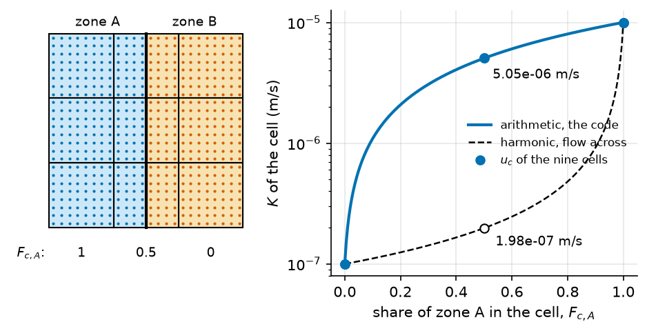

From a zone map to the cells#
A property such as \(K\) is given per zone of a map: geology classes, bands, rings, or the zones of a raster. The solver needs one value per cell and per layer. This page gives the rule that turns the first into the second, what that rule means for the conductivity, and a worked example. The keys of a value per zone are in [flow.param].
Notation of this page
Symbol |
Meaning |
Unit |
Set by |
|---|---|---|---|
\(K\) |
horizontal hydraulic conductivity, the same along \(x\) and \(y\) |
m/s |
|
\(f(d)\) |
factor that scales a property with the depth \(d\) below the top |
||
\(a_n\) |
plan area of cell \(n\) |
m² |
the grid |
\(v_z\) |
value the parameter gives to zone \(z\) |
that of the property |
|
\(F_{c,z}\) |
share of the sample points of cell \(c\) that fall in zone \(z\) |
derived |
|
\(n_s\) |
sample points per axis of a cell |
||
\(u_{c,j}\) |
value of a property in cell \(c\) and layer \(j\) |
that of the property |
derived |
The rule#
A parameter with one value is spread over every cell. A parameter that points to a zone
map through its field_spatial_id is mapped in three steps.
Sample the cell. Each cell \(c\) is covered by a regular set of sample points, \(n_s\) per axis of the cell. A point takes the zone that contains it.
Count the zones. \(F_{c,z}\) is the share of the points of \(c\) that fall in zone \(z\), among the points that fall in a zone. A point outside every zone of a geology map or of a raster map is left out of the count.
Average, then scale with depth. The value of the cell in layer \(j\) is
with \(v_z\) the value of zone \(z\) and \(f(d_j)\) the depth factor (15) at the depth of the middle of layer \(j\). A parameter with one value \(v\) gives \(u_{c,j} = f(d_j)\,v\).
\(F_{c,z}\) is an estimate of the share of the area of \(c\) that lies in \(z\). Its
resolution is \(1 / n_s^2\) of the cell: a zone that covers less than that may get no
point. The same rule applies to every property, \(K\), \(S_y\), \(S_s\) or the porosity. The
two MODFLOW solvers apply it per layer; the Boussinesq solver applies it once, at the
depth \(d = 0\), because it has one layer. In the code: FieldParam.to_mesh_field.
A zone of the map with no value in the parameter stops the run, with a message that names the missing keys. A cell where no point falls in any zone gets \(\sum_z F_{c,z} = 0\), so a value of zero, and a zero \(K\) on an active cell is refused.
What the rule means for the conductivity#
(20) is an arithmetic mean weighted by area, the upper bound of the equivalent conductivity of a cell cut by several zones; the harmonic mean is the lower bound, and a random mix lies between [Renard and de Marsily, 1997]. A cell that holds a thin layer of low \(K\) across the flow therefore conducts more in the model than in the ground.
Between two cells, the conductance (18) joins the two cell values in series. A contrast that follows the cell faces is represented in series; a contrast inside a cell is represented in parallel.
A worked example#
Three cells of a row, two zones, \(v_A = 10^{-5}\) m/s and \(v_B = 10^{-7}\) m/s, no depth factor. The interface between the zones crosses the middle cell.
Cell |
\(F_{c,A}\) |
\(F_{c,B}\) |
\(u_c\) by (20) |
harmonic mean, for comparison |
|---|---|---|---|---|
1 |
1 |
0 |
\(1.0 \times 10^{-5}\) m/s |
\(1.0 \times 10^{-5}\) m/s |
2 |
0.5 |
0.5 |
\(5.05 \times 10^{-6}\) m/s |
\(1.98 \times 10^{-7}\) m/s |
3 |
0 |
1 |
\(1.0 \times 10^{-7}\) m/s |
\(1.0 \times 10^{-7}\) m/s |
For a flow along the row, across the interface, the middle cell conducts about 25 times more than its harmonic mean. Refining the mesh at the interface, or aligning the cell faces with it, removes the mixed cell.

Fig. 27 The example above, three rows of it, run through the code. Left: the sample
points of each cell (\(n_s = 8\) per axis, the default) take the colour of
their zone, and \(F_{c,A}\) counts them. Right: the value
FieldParam.to_mesh_field gives each cell (dots) lies on the arithmetic mean;
the harmonic mean (dashed) is the value for a flow across the boundary. Look at the
middle cells: \(5.05 \times 10^{-6}\) m/s against
\(1.98 \times 10^{-7}\) m/s.#
Assumptions#
A cell holds one value of each property per layer.
The zone of a point is the zone of the map that contains it; the map is not smoothed.
The depth factor is the same function in every zone.
Limits#
Arithmetic mean only. The aggregation is
weighted_average; no geometric or harmonic option exists.A sampled share. \(F_{c,z}\) is counted on \(n_s\) points per axis, not computed from the exact intersection of the cell and the zone.
Same rule on every grid. A coarse structured grid and a fine irregular mesh mix the zones differently, so two runs that share a zone map do not share their cell values. Compare them on the same grid, or report the grid with the result.
Parameters of this page#
Checked by#
10 test files import hydromodpy.spatial.field.core.field_param, hydromodpy.spatial.field.core.cell_sampling, hydromodpy.spatial.domain.spatial_support, hydromodpy.solver.field_property_mapping. Their names say what they check.
unit: 10
- A trial rebuilds the vertical profile field. calibration
- Field param. field
- Geology field. field
- Review cases. field
- Sgrid fieldparam discretization. mesh/cartesian_grid/field_discretization
- Extruded fieldparam discretization. mesh/gmsh_grid
- Voronoi. mesh
- Property mapping spatial support. solver/modflow_nwt
- A calibration trial value reaches the npf k array. solver
- Conductivity reaches the solver positive. solver
In the code#
What |
Where |
|---|---|
The weighted average and the depth factor |
|
The shares of each zone in a cell |
|
The sample points of a cell |
|
Per layer, for MODFLOW |
|
Once, for Boussinesq |
|
See also#
The groundwater flow problem: the properties in the flow equation, and the depth factor.
The mesh: the cells the values land on.
[flow.param]: give a value per zone.